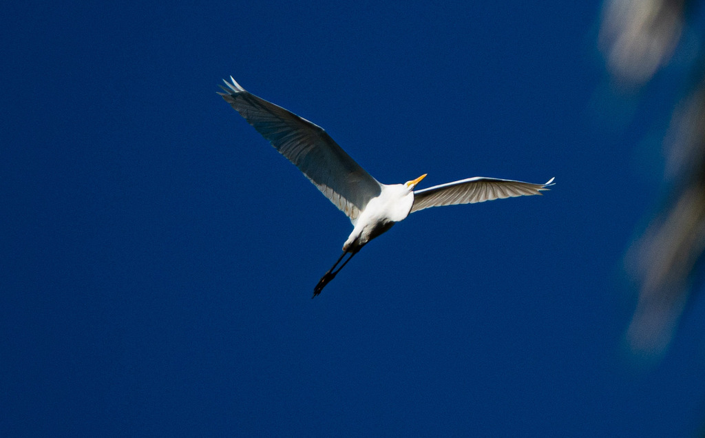

- The great egret hunts through sheer stillness, waiting motionless in the shallows until a fish drifts close, then uncoiling its neck in a split-second strike.
- Standing over three feet tall and entirely snow white, it is hard to miss at the water's edge.
- A little over a century ago it was nearly wiped out — hunted in breeding season for the lacy plumes on its back, which were prized for women's hats.
- The outrage over that loss helped spark the early conservation movement, and the great egret became the symbol of the National Audubon Society.
Entirely white.
Long, dagger-shaped, and yellow.
Black, top to bottom.
Grow long, wispy plumes on the back and develop a greenish patch of skin on the face.
Usually quiet away from the colony. When disturbed it gives a low, hoarse croak; nesting birds are noisier.
A large, all-white wading bird with a yellow bill and black legs, standing motionless or stalking slowly through shallow water. The yellow bill plus black legs separate it from the smaller snowy egret, which has a black bill and bright yellow feet.
Mostly fish, plus frogs, crayfish, insects, small reptiles, and the occasional small mammal — caught with a fast jab of that dagger bill.
At the edges of the ponds, standing still in the shallows or stalking slowly along the bank. A tall white bird holding a statue-like pose over the water is almost always this species.
Year-round resident. Often most active hunting in the cooler hours of morning and late afternoon.
Admire from a distance and never feed it. Crowding a hunting egret ruins its chance at a meal and stresses the bird.


- © Rob Carr (CC-BY-NC), via iNaturalist
- © Mac Lewis (CC-BY-NC), via iNaturalist
- © David McSwain (CC-BY-NC), via iNaturalist
- © Maria Escobar (CC-BY-NC), via iNaturalist